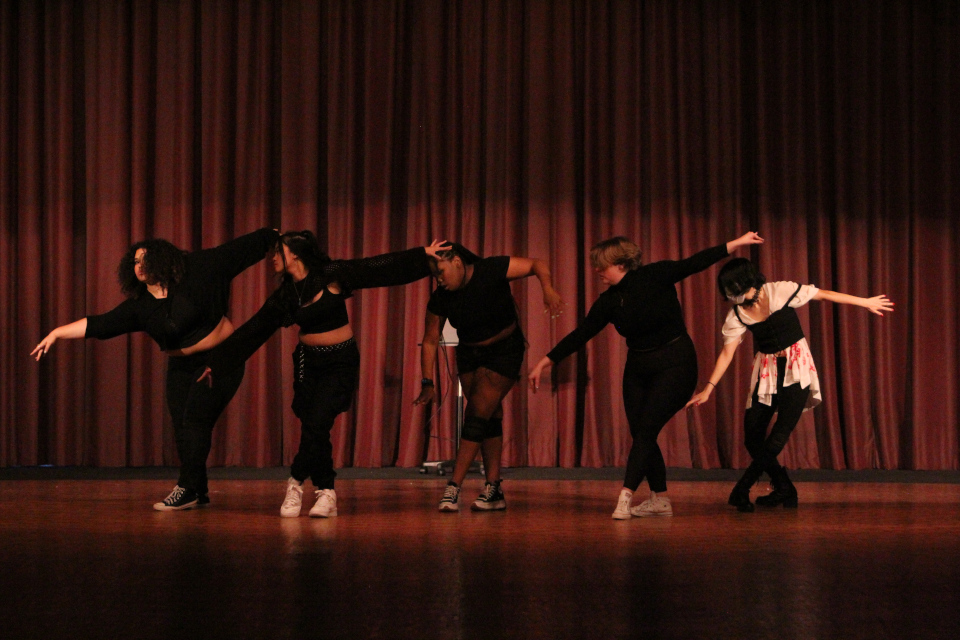
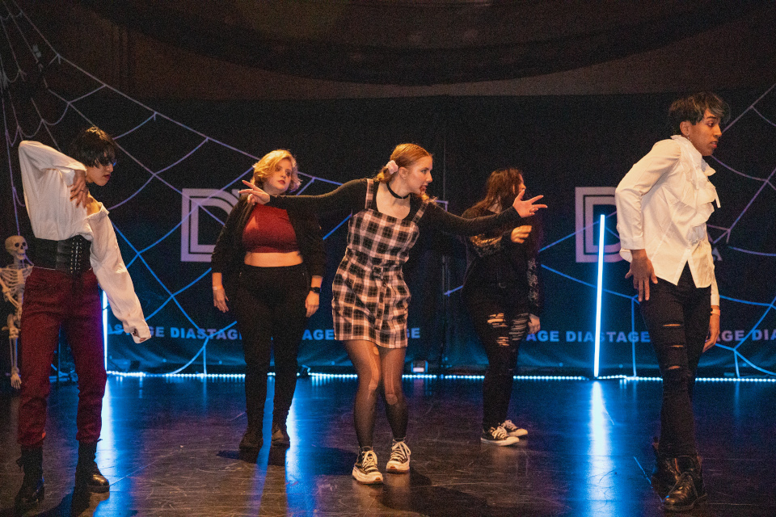

About Us
Hi, we are Kosmic Dance Club! This organization was started at the University of South Carolina to provide an environment for people who enjoy K-Pop dance to come together to dance and socialize. The two founders of this club created this club to give a safe space for students to have fun and dance. We encourage any student at USC with an interest in K-Pop dance to join no matter the skill level or experience. Whether you want to casually learn a K-Pop dance for fun or join us in competition and performance pieces, this is the place for you!

Our Mission
Our mission is to create and foster a friendly community of students who enjoy all things related to Korean popular music and make this organization a fun and safe space for students to express themselves through dance and physical activity.

Why Join?
You would like to socialize and make new friends with similar interests.
You want to make progress in your abilities as a dancer. Especially in preparation for competition pieces, we will finetune technical skills such as cleanliness, isolations, uniformity, formations, etc.
You want to learn how to lead a team and pursue a position on our Executive Board or as a Head of a Committee (committees such as dance, music editing, social media, etc.).
"
Kosmic has been a place I have made many meaningful connections and have had many wonderful experiences where I have grown as a dancer and as a person. Everybody was welcoming and I loved having friends to get excited with about new and old K-pop content.